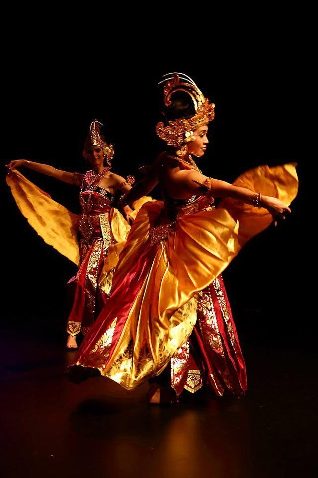
Tari Tradisional
Gerak yang Bercerita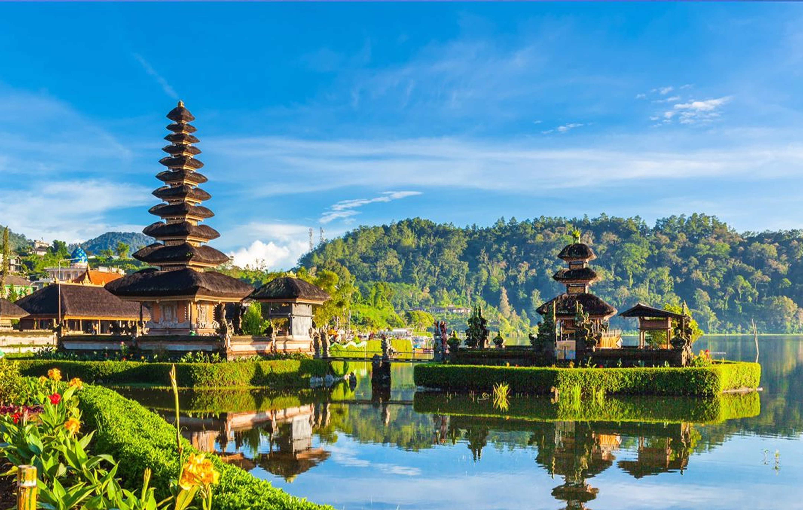
Jelajahi Keindahan
Warisan budaya, seni, dan tradisi daerah

Tari Tradisional
Gerak yang BerceritaMusik Tradisional
Harmoni dari Timur Hingga Barat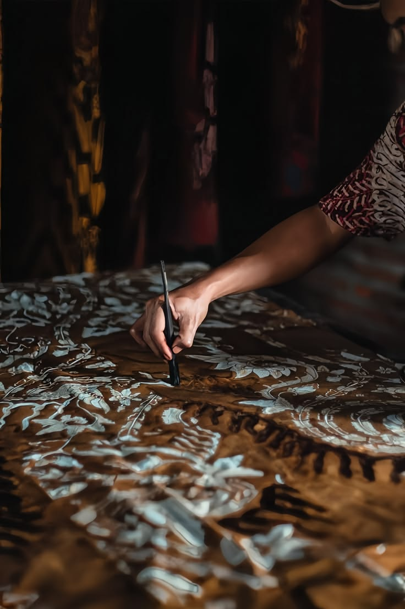
Kerajinan
Karya Tangan Penuh Cerita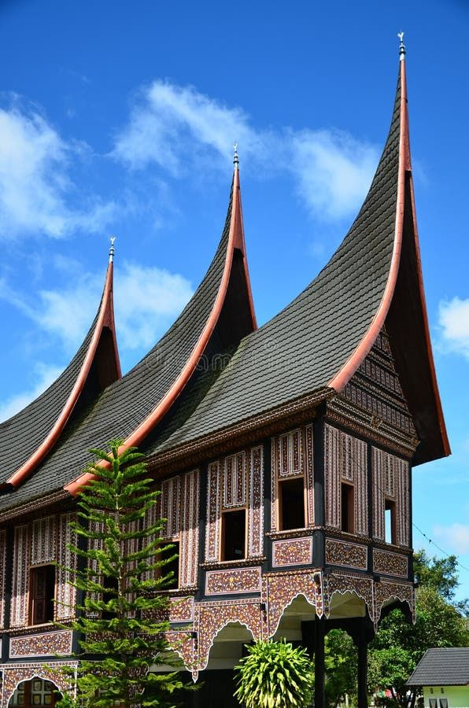
Rumah Adat
Arsitektur Penuh FilosofiKuliner
Cita Rasa dari Tiap Daerah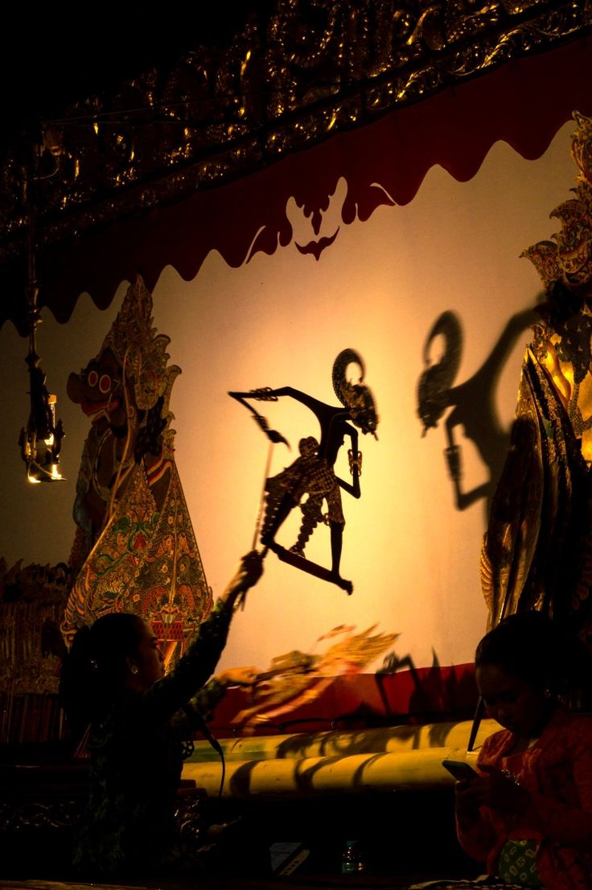
Pakaian Adat
Identitas yang DikenakanDari Sabang hingga Merauke, Setiap daerah di indonesia memiliki cerita, tradisi, dan seni yang unik. Temukan keindahan budaya Nusantara dalam berbagai bentuk warisan yang terus hidup menginspirasi.
— Satu Nusantara · Jutaan CeritaDari Sabang hingga Merauke, setiap daerah menyimpan cerita, tradisi, dan seni yang membentuk identitas Indonesia. Temukan warisan tersebut tumbuh, diwariskan, dan terus hidup hingga hari ini.
Seiring berjalan waktu, pengetahuan budaya diteruskan dari satu generasi ke generasi berikutnya. Batik, wayang, gamelan, tenun, tari, ukiran, dan berbagai kesenian bukan sekadar peninggalan masa lalu, melainkan bagian dari kehidupan masyarakat yang terus dipraktikkan.
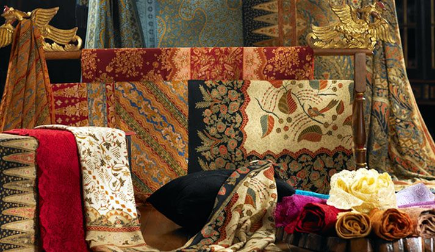
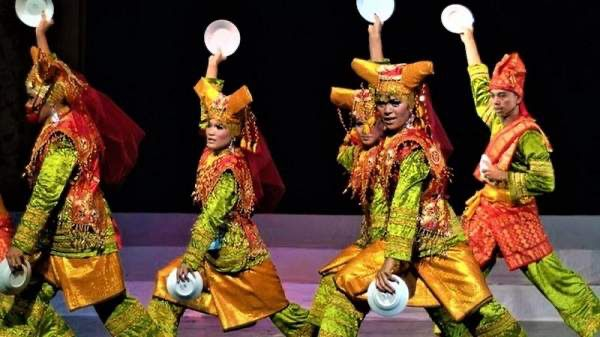
Jauh sebelum Indonesia menjadi sebuah negara, Nusantara telah menjadi ruang pertemuan berbagai masyarakat dan kebudayaan. Jejaknya hadir dalam bahasa, kepercayaan, arsitektur, kerajinan, musik, hingga tradisi lisan yang berkembang di berbagai wilayah.
Hari ini, warisan tersebut tidak hanya disimpan sebagai benda masa lalu. Ia hidup melalui perajin, seniman, penari, pemusik, guru, komunitas, dan generasi muda yang terus mempelajari serta meneruskannya.
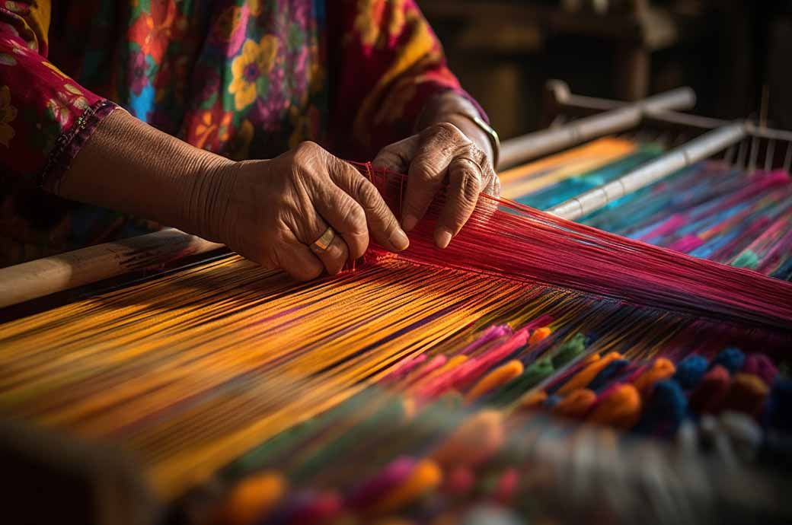
Nusantara selalu menjadi ruang pertemuan pengaruh. Tradisi tidak berhenti pada bentuk lama: ia beradaptasi dengan zaman tanpa kehilangan akar dan maknanya. Dari proses inilah lahir keberagaman seni dan budaya yang menjadi ciri khas setiap daerah.
Dari pegunungan yang menjulang, lautan yang membentang, hingga hutan yang rimbun, alam Nusantara menyimpan keindahan dan kehidupan yang menjadi bagian penting dari warisan kita bersama.
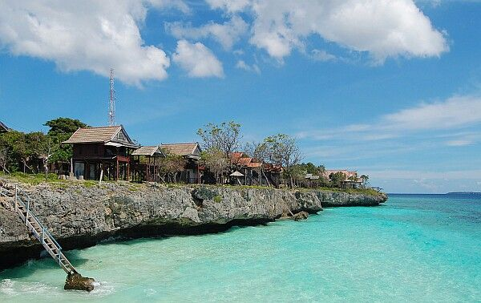
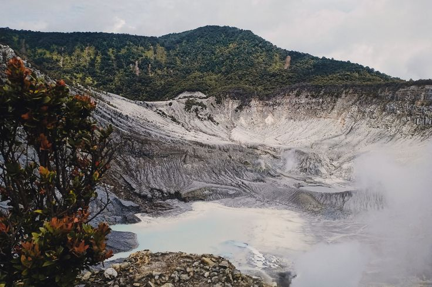
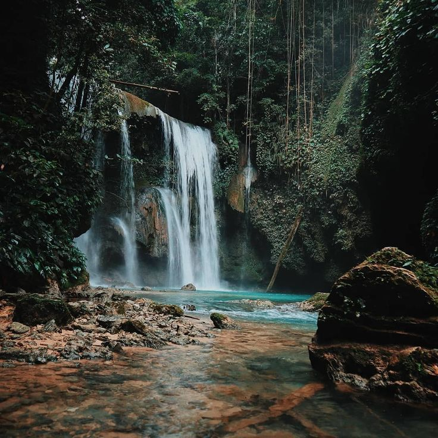
Dari Sabang sampai Merauke, setiap daerah di Indonesia memiliki festival dan tradisi unik yang penuh makna. Jelajahi berbagai perayaan budaya yang menjadi bagian dari identitas bangsa.

Bali
Perayaan kemenangan dharma melawan adharma yang dirayakan setiap 210 hari sekali.
Selengkapnya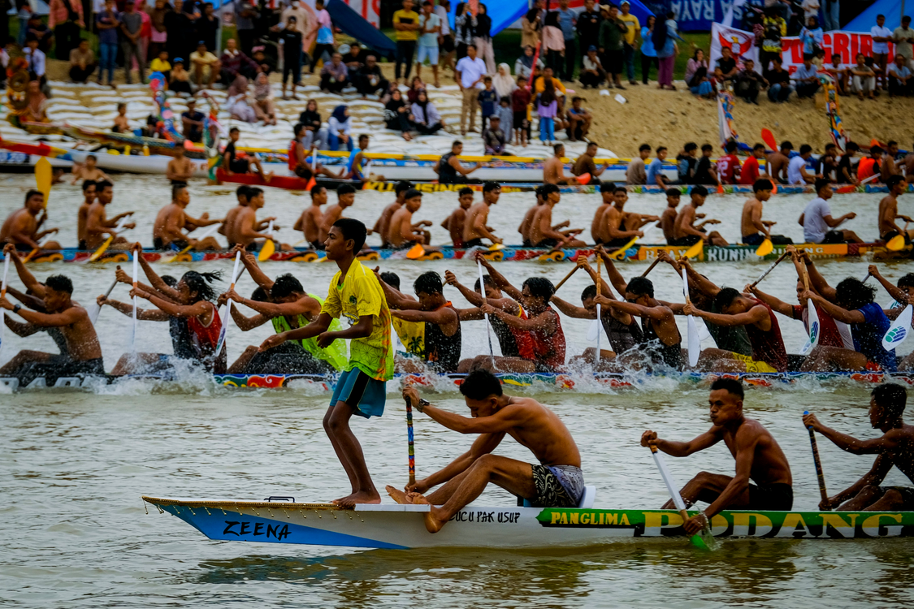
Riau
Tradisi lomba perahu khas Kuantan Singingi yang sudah menjadi identitas budaya masyarakat setempat.
Selengkapnya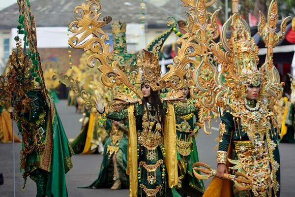
Jember, Jawa Timur
Perpaduan seni, budaya, dan kreativitas dalam bentuk karnaval busana yang mendunia.
Selengkapnya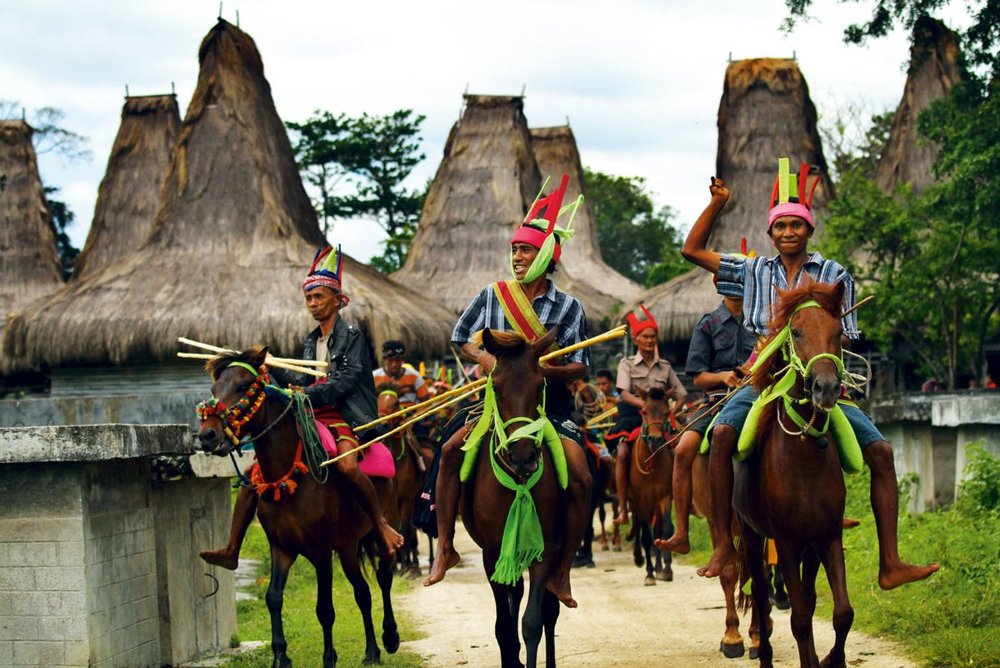
Sumba
Tradisi masyarakat Sumba yang berkaitan dengan kepercayaan Marapu, siklus pertanian, dan hubungan manusia dengan alam.
Selengkapnya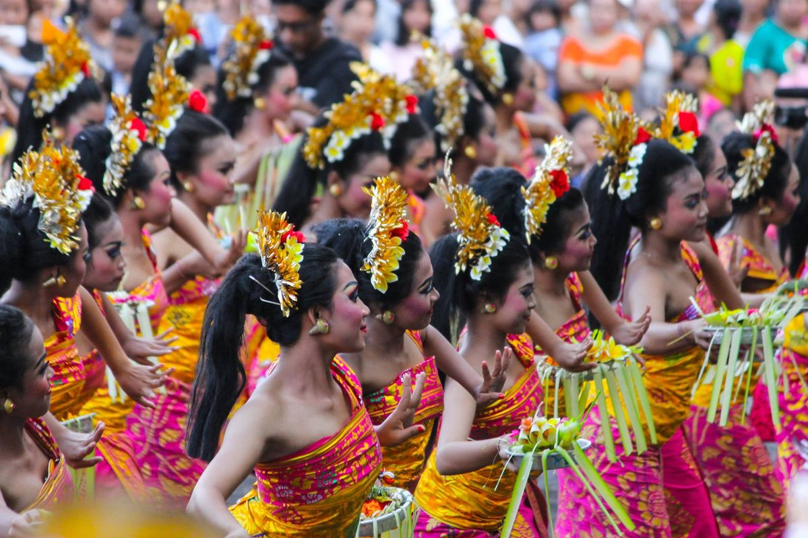
Bali
Ajang tahunan yang menghadirkan tari, musik, kerajinan, dan beragam ekspresi seni untuk merawat sekaligus mengembangkan budaya Bali.
Selengkapnya